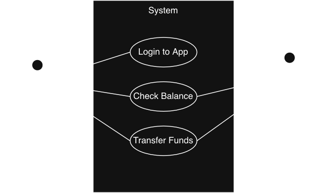
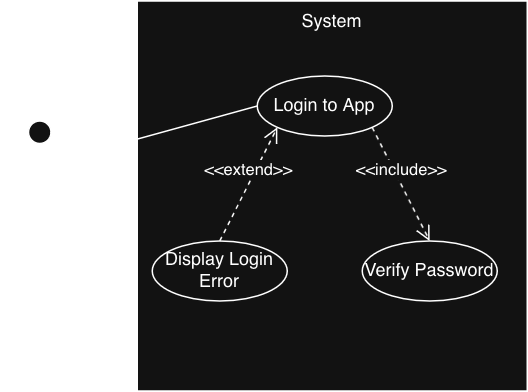
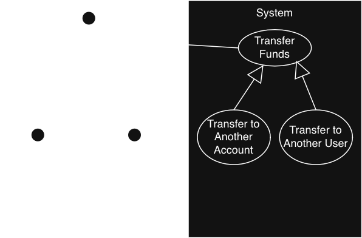

A car engine has ~200 moving parts; we use diagrams to understand it.
An ATM system has thousands of interacting objects; we need models even more.
Software is invisible and abstract; you cannot see or touch it.
Models make software visible, discussable, and understandable.
Unified Modeling Language (UML)
The industry-standard visual language for specifying, constructing, and documenting software systems.
The Three System Perspectives:
Functional Behavior
Static Structure
Dynamic Behavior
Functional Perspective
What does the system do?
Why does someone use it?
Use Case Diagram, Activity Diagram
Static Perspective
What objects are involved?
What are their attributes?
What operations do they perform?
How are they related to each other?
Class Diagram, Object Diagram
Dynamic Perspective
How do objects interact over time?
Sequence/State Diagram, Activity Diagram
The ATM System (5 minutes)
Write down one item to describe an ATM system from each of the three perspectives:
Functional (what?)
Static (with what?)
Dynamic (how?)
Candidate Object Identification
Techniques to find candidate classes:
Noun Extraction
Observation
Turning Candidate Objects into Classes
For each candidate, evaluate it using the E.A.R. framework:
Entity: What "thing" is it? Does it contain component parts?
Attributes: What attributes describe the entity? Note that while these become fields, not all fields (like flags or counters) are attributes.
Relationships: What other entities does this entity need or use?
Noun Extraction (5 minutes)
Work in pairs.
Extract the nouns from this requirement and classify them as an Entity (Object) or an Attribute.
A customer interacts with the ATM to make a withdrawal from their account. The account checks the current balance and a daily withdrawal limit.
The BEC Taxonomy
For software systems, we can categorize our classes:
Boundary: Interfaces with actors
Control: Implements system logic and coordinates tasks
Entity: Stateful objects containing system information
The Golden Rule: Boundaries NEVER talk directly to Entities. All communication goes through Control objects.
Boundary Objects
Inside our system, but interface with elements outside the system.
They are a "portal" or "gateway" between outside and inside.
Boundary Objects: CardReader Example
The Problem: Hardware devices speak a low-level language your application should never have to know.
The Solution: Wrap it in a Boundary Object.
// The rest of the system never sees device registers or bit patterns.
// It only knows one thing:
cardReader.acceptCard();
Entity Objects
Represent information, data, and state needed by the system; not boundary objects.
They are not just data containers; they provide methods that act on their own data.
Entity Objects: Receipt Example
The printer is a boundary object, but the receipt is likely an entity object.
The Receipt Entity is build up incrementally.
// State accumulates as the transaction progresses
receipt.setDateTime(LocalDateTime.now());
receipt.setAccountNumber(account.getAccountNumber());
receipt.setFinalBalance(account.getBalance());
// The Entity is passed to Boundary objects as needed
printer.print(receipt); // Output to hardware
transactionLog.archive(receipt); // Output to local storage
Control Objects
Orchestrate the flow and manage behavior.
Coordinate the other objects so neither entity nor boundary objects have to interact directly.
One main controller initializes everything; separate controllers per major use case.
Control Objects: ATM Example
Application Scope vs. Transaction Scope:
AtmController: Handles system startup, main menus, and hardware initialization; lives until the ATM shuts down.
WithdrawCashController: Manages a single withdrawal flow; created dynamically and destroyed when transaction finishes.
Architectural Value: Each transaction gets its own controller, state, and lifecycle, ensuring no shared mutable state between transactions.
Use Case Diagrams
A Use Case diagram answers the question: "What does this system do for whom?"
High-level view, no implementation details
Shows the services a system provides and who uses them
Starting point for every other model
Use Case Diagrams
Actors (Stick Figures): External entities interacting with the system.
Use Cases (Ovals): Major system functionalities, start with a verb.
Relationships:
Association (Solid Line): Connects an actor to a use case.

A use case diagram showing the Customer on the left with interaction lines to use cases Login to App, Check Balance, and Transfer Funds, which are all contained in the System. The Bank is on the right with interaction lines to Check Balance and Transfer Funds.
Relationships: Include
Always happens (dotted line)
Arrow points FROM base case TO included case.
Models mandatory sub-behavior factored out to eliminate duplication.
Example: Every transaction always includes Authentication.
Relationships: Extend
Sometimes happens (dotted line)
Arrow points FROM extending case TO base case.
Models exceptional flows that may or may not occur.
Example: WithdrawCash may extend with "Non-Sufficient Funds".
Relationships: Generalization
Generalization (Solid Arrow with Open Triangle): Is a kind of
Similar to abstract classes.
Child use case (or actor) is a specialized version of the parent.
Arrow goes FROM child TO parent.
Example: Transfer to Another Account IS A kind of Transfer Funds.
Advanced Relationships

A use case diagram showing the Customer on the left with a solid line to the Login to App use case, which has a dotted line pointing to the Verify Password use case. The Display Login Error has a dotted line pointing to Login to App.

A use case diagram showing the Customer on the left with child actors Adult Customer and Minor Customer. Customer is associated with Transfer Funds use case, which has Transfer to Another Account and Transfer to Another User as child use cases.
ATM Use Case Diagram (10 minutes)
Work in pairs to build the ATM use case diagram:
Include Customer and Bank actors
Include Check Balance, Transfer Funds, Withdraw Cash use cases
Add the Authenticate use case as an include relationship
Add at least two extend use cases for Withdraw Cash